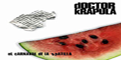
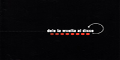
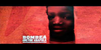

Doctor Krapula
Doctor Krápula es una banda de Ska punk colombiana, conformado por Mario Muñoz, David Jaramillo y Germán Martínez. Aunque la banda es reconocida más como una de rock y punk, también incorpora géneros rítmicos muy folclóricos en sus canciones
Es reconocida por tener mensajes políticos muy contundentes en sus letras. También se le reconoce por su activismo político con tendencia de izquierda, siendo reconocido por ser uno de los principales patrocinadores del paro nacional de 2019.
Álbumes

El Carnaval De La Apatilla 2002
- «Levantamuertos» 2:37
- «La verdad del payaso» 4:04
- «El mango» 3:53
- «El hombre gris» 3:44
- «Ella sabe quien es» 4:13
- «Arracacha's song on the sea» 0:45
- «Canción de mora» 2:26
- «Jupiter's chontaduros song on the milky galaxy» 0:48
- «El marciano» 3:26
- «Esporangio cerebral» 3:53
- «Carola» 4:24
- «Mandarina and the martinis drinkers» 2:16
- «Laberinto» 2:18
- «Juanahabana» 7:30
- «Carola (radio versión)» 4:07
LEER +

Dele La Wuelta Al Disco 2003
- «La verdadera lucha» 2:25
- «Que tristeza ni que 8/4» 2:40
- «1143 Tomates contigo» 3:53
- «Sinfonía para sustos y terrores» 0:13
- «Por culpa del miedo» 2:57
- «Me bebí tu recuerdo» 3:04
- «El hombre gris» 3:31
- «Sonata para chascarrillos y una que otra estolidez» 0:40
- «La verdad del payaso» 2:27
- «Silbame un aguardiente» 0:15
- «Llego berraco» 1:54
- «Tauricida» 3:49
- «El mango» 3:55
LEER +

Bombea 2005
- «Uy que vaina» 3:08
- «El pibe de mi barrio» 2:48
- «El paraguas» 2:45
- «Wele a peligro» 3:25
- «Hagase sentir» 2:59
- «Libre» 3:56
- «No me trates tan mal» 2:33
- «I am gonna go» 3:39
- «El butaco» 2:46
- «Para todos todo» 2:45
- «La fuerza del amor» 3:37
- «Semilla en ti» 4:11
- «Radio mentira» 3:28
- «Traicionera» 1:51
- «Bombea» 4:43
LEER +
Sagrado Corazón 2008
- «Luchando voy» 3:17
- «Vida» 2:56
- «Ilegal» 2:59
- «Bam» 4:26
- «Mister danger» 3:17
- «Tiempo locura» 3:09
- «Espíritu del viento» 4:12
- «Activación» 3:01
- «Más vale tarde que nunca» 3:44
- «Amar abierto» 3:05
- «Resiste» 3:13
- «Mi gente» 3:19
- «Poco a poco» 3:04
LEER +
TOP 5
- No Disparen
- La Fuerza Del Amor
- Amanece
- El Pibe De Mi Barrio
- Trátame Suavemente